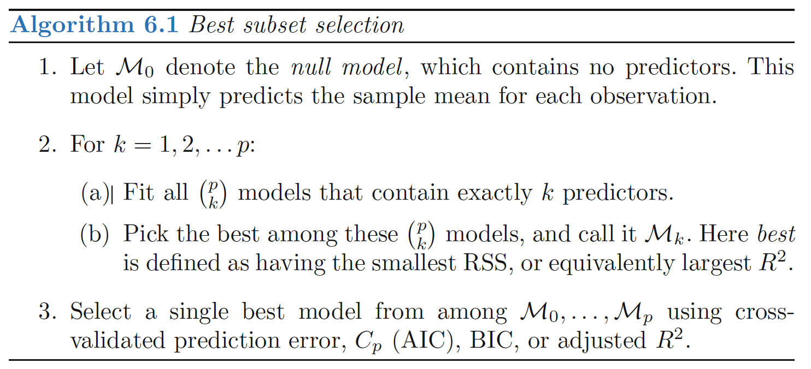
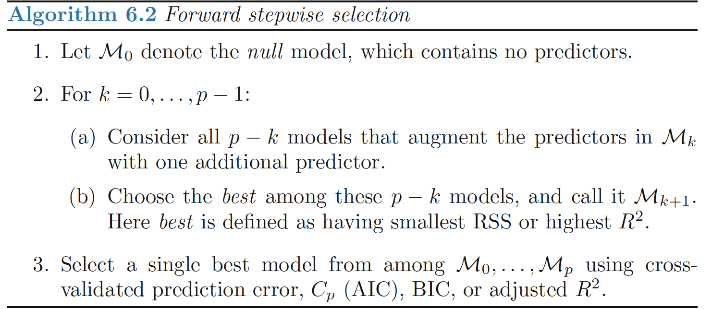

Best Subset Selection
Approach
fit a separate least squares regression best subset for each possible combination of the p predictors. That is, we fit all p models selection that contain exactly one predictor, all \(\left(\begin{array}{c}p\\ 2\end{array}\right)= p(p−1)/2\) models that contain exactly two predictors, and so forth.
We then look at all of the resulting models, with the goal of identifying the one that is best.

Note
- \(RSS\) of these p + 1 models decreases monotonically, and the \(R2\) increases monotonically, as the number of features included in the models increases. Therefore, if we use these statistics to select the best model, then we will always end up with a model involving all of the variables
- The problem of selecting the best model from among the \(2^p\) possibilities considered by best subset selection is not trivial.
Stepwise Selection
Forward Stepwise Selection
Approach
Forward stepwise selection begins with a model containing no predictors, and then adds predictors to the model, one-at-a-time, until all of the predictors are in the model.
In particular, at each step the variable that gives the greatest additional improvement to the fit is added to the model.

Forward Stepwise Selection V.S. Best Subset Selection
- Forward stepwise selection’s computational advantage over best subset selection is clear.
- Forward stepwise is not guaranteed to find the best possible model out of all \(2^p\) models containing subsets of the p predictors.
Backward Stepwise Selection
Approach
- Backward Stepwise Selection begins with the full least squares model containing all p predictors, and then iteratively removes the least useful predictor, one-at-a-time
Backward Stepwise Selection V.S. Forward Stepwise Selection:
- Like forward stepwise selection, the backward selection approach searches through only 1+p(p+1)/2 models, and so can be applied in settings where p is too large to apply best subset selection.
- Like forward stepwise selection, backward stepwise selection is not guaranteed to yield the best model containing a subset of the p predictors.
- Backward selection requires that the number of samples n is larger than the number of variables p (so that the full model can be fit). In contrast, forward stepwise can be used even when n < p, and so is the only viable subset method when p is very large.
Hybrid Approaches
Approach
- Variables are added to the model sequentially, in analogy to forward selection.
- However, after adding each new variable, the method may also remove any variables that no longer provide an improvement in the model fit.
Note
Such an approach attempts to more closely mimic best subset selection while retaining the computational advantages of forward and backward stepwise selection.
Choosing the Optimal Model
The training error can be a poor estimate of the test error. Therefore, RSS and R2 are not suitable for selecting the best model among a collection of models with different numbers of predictors.
2 Methods:
indirectly estimate test error by making an adjustment to the training error to account for the bias due to overfitting.
directly estimate the test error, using either a validation set approach or a cross-validation approach
\(C_p\), \(AIC\), \(BIC\), Adjusted \(R^2\)
- the training set MSE is generally an underestimate of the test MSE. (Recall that MSE = RSS/n.)
- the training error will decrease as more variables are included in the model, but the test error may not.
- Therefore, training set RSS and training set R2 cannot be used to select from among a set of models with different numbers of variables.
\(C_p\)
\(C_p\) estimate of test MSE:
\[ \begin{align} C_p=\frac{1}{n}(RSS+2d\hat{\sigma}^2) \end{align} \] where \(\hat{\sigma}^2\) is an estimate of the variance of the error \(\epsilon\)
Note: - The \(C_p\) statistic adds a penalty of \(2d\hat{\sigma}^2\) to the training RSS in order to adjust for the fact that the training error tends to underestimate the test error. - The penalty increases as the number of predictors in the model increases; this is intended to adjust for the corresponding decrease in training RSS. - If \(\hat{\sigma}^2\) is an unbiased estimate of \(\sigma^2\) in, then \(C_p\) is an unbiased estimate of test MSE - When determining which of a set of models is best, we choose the model with the lowest \(C_p\) value.
AIC
The AIC criterion is defined for a large class of models fit by maximum likelihood. In the case of the model \(Y = β_0 + β_1X_1 + · · · + β_pX_p + \epsilon\) with Gaussian errors, maximum likelihood and least squares are the same thing.
In this case AIC is given by
\[ \begin{align} AIC=\frac{1}{n\hat{\sigma}^2}(RSS+2d\hat{\sigma}^2) \end{align} \] For least squares models, Cp and AIC are proportional to each other
BIC
For the least squares model with d predictors, the BIC is, up to irrelevant constants, given by \[ \begin{align} BIC=\frac{1}{n}(RSS+\log(n)d\hat{\sigma}^2) \end{align} \] Since log(n) > 2 for any n > 7, the BIC statistic generally places a heavier penalty on models with many variables, and hence results in the selection of smaller models than Cp.
Adjusted \(R^2\)
Recall: \[ \begin{align} R^2=1 − RSS/TSS=1-\frac{RSS}{\sum(y_i-\bar{y})^2} \end{align} \] TSS: total sum of squares for the response
For a least squares model with d variables, the adjusted R2 statistic is calculated as \[ Adjusted \, R^2=1 − \frac{RSS/(n-d-1)}{TSS/(n-1)} \] Note:
- a large value of adjusted R2 indicates a model with a small test error. Maximizing the adjusted R2 is equivalent to minimizing \(RSS/(n−d−1)\)
- \(RSS/(n−d−1)\) may increase or decrease, due to the presence of d in the denominator.
Intuition: - once all of the correct variables have been included in the model, adding additional noise variables will lead to only a very small decrease in RSS - Unlike the R2 statistic, the adjusted R2 statistic pays a price for the inclusion of unnecessary variables in the model
Validation and Cross-Validation
As an alternative to the approaches just discussed, we can compute the validation set error or the cross-validation error for each model under consideration, and then select the model for which the resulting estimated test error is smallest.
Advantage over \(C_p, AIC, BIC\):
- Direct estimate of the test error, and makes fewer assumptions about the true underlying model.
- Used in a wider range of model selection tasks, even in cases where it is hard to pinpoint the model degrees of freedom or hard to estimate the error variance σ2.
One-standard-error rule: We first calculate the standard error of the estimated test MSE for each model size, and then select the smallest model for which the estimated test error is within one standard error of the lowest point on the curve.
- Rationale: if a set of models appear to be more or less equally good, then we might as well choose the simplest model